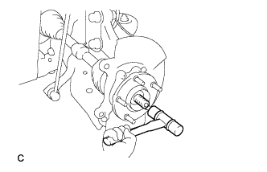
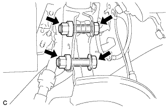
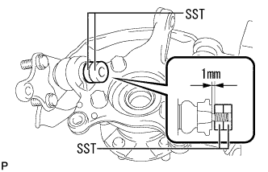
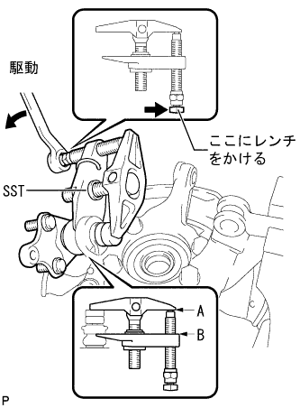

Steering Knuckle LH Removal |
| 1. Remove Front Tire |
| 2. Remove Front Axle Shaft Nut LH |
 |
Set the SST aligned with the groove of the front drive shaft assembly LH, and using a hammer, unstake the front axle hub nut LH.
Using a socket wrench (30mm), remove the front axle hub nut LH.
| 3. Disconnect Speed Sensor Front LH |
 |
Remove the 2 bolts and disconnect the speed sensor wire and flexible hose.
 |
Remove the bolt and disconnect the speed sensor front LH from the steering knuckle.
| 4. Disconnect Tie Rod End LH |
Remove the cotter pin and castle nut.
 |
Using SST, disconnect the tie rod end LH from the steering knuckle.
| 5. Disconnect Front Disc Brake Caliper Assembly LH |
 |
Remove the 2 bolts and disconnect the front disc brake caliper assembly LH from the steering knuckle.
| 6. Remove Front Disc |
 |
Put matchmarks on the disc and axle hub, and remove the disc.
| 7. Disconnect Front Suspension Arm Sub-assembly Lower NO.1 LH |
 |
Remove the 1 bolts and 2 nuts.
Push down the front suspension lower arm No.1 LH and disconnect it from the front lower ball joint LH.
| 8. Remove Front Axle Assembly LH |
 |
Using a plastic hammer, lightly tap the end of the front drive shaft assembly LH to disengage the front drive shaft assembly LH from the front axle assembly LH.
Push the front axle assembly LH toward the outside of the vehicle and pull the front drive shaft assembly LH out of the front axle assembly LH.
 |
Remove the 2 bolts and 2 nuts, and remove the front axle assembly LH from the front shock absorber.
| 9. Front Axle Hub LH Removal |
Secure the front axle assembly in a vise between aluminum plates.
 |
Remove the 4 bolts, and remove the front axle hub and dust cover.
| 10. Steering Knuckle LH Removal |
Using aluminum plates, secure the front axle assembly LH in a vise.
 |
Install the 2 SSTs to the ball joint of the front lower ball joint assembly LH.
 |
Using SST, remove the front lower ball joint assembly LH from the front axle assembly LH.